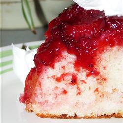
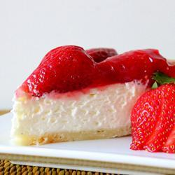
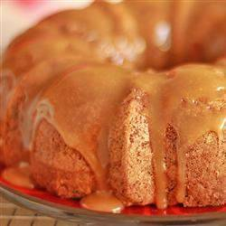
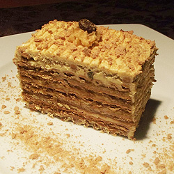
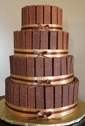
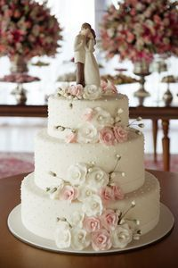

O MELHOR SITE DE PASTELARIA
Bolo de Morango
Pudim de Morango
Bolo de Caramelo
Bolo de Bolacha
Bolos Para Ocasiões Especiais
Ola bem vindo a confeitaria "Balancing Bites", para além de bolos simples e deliciosos, também fazemos bolos para ocasiões especiais, seja para Aniversarios, Casamentos, Despedidas de Solteiros, para qualquer ocasião que os nossos clientes desejarem, e para isso temos uma equipa profissional de Cozinheiros especiacilazada em tratar de o agradar com os nossos bolos deliciosos.
Recheios para bolos de casamento:
- BUTTERCREAM
- FONDANT
- MERENGUE FRANCÊS
- GLACÊ REAL
- CHOCOLATE
- BOLO ABERTO

CONTACTOS
Tlm:291452343
Fax:(081) 222 5555
